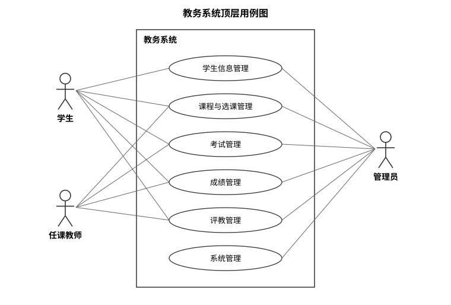
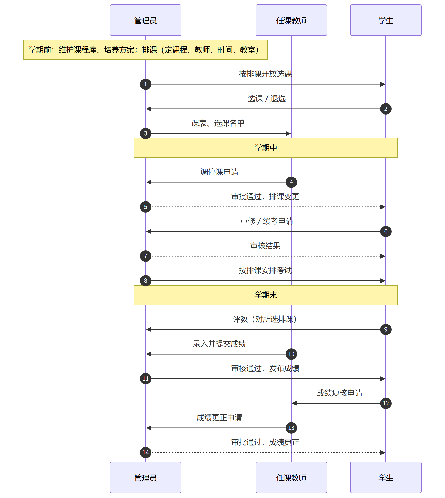
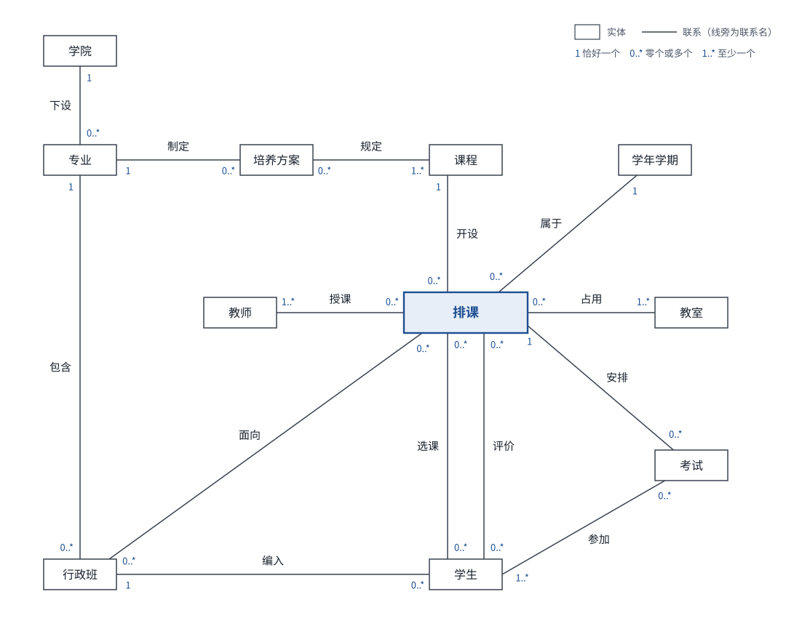

<title>教务系统需求分析</title>
<meta name="claude:viewport-fit-sides" content="cover">
<link rel="preconnect" href="https://fonts.googleapis.com">
<link rel="preconnect" href="https://fonts.gstatic.com" crossorigin>
<link rel="stylesheet" href="https://fonts.googleapis.com/css2?family=IBM+Plex+Mono:wght@500&family=Noto+Sans+SC:wght@400;500;700&family=Noto+Serif+SC:wght@600;700&display=swap">
<style>
/* 布局：单栏课程报告，正文约 860px；图放在白色底板上，打印为 A4 */
:root {
  --bg: #f6f8fb;
  --ink: #18212d;
  --muted: #5a6577;
  --rule: #dbe1e9;
  --accent: #1d4f91;
  --accent-soft: #e8eef8;
  --plate: #ffffff;
  --in: #1f6b4a;
  --in-soft: #e3f2ea;
  --out: #8a4b16;
  --out-soft: #f7ece2;
  --font-head: "Noto Serif SC", "Microsoft YaHei", "PingFang SC", sans-serif;
  --font-body: "Noto Sans SC", "Microsoft YaHei", "PingFang SC", sans-serif;
  --font-mono: "IBM Plex Mono", Consolas, "Courier New", monospace;
}
@media (prefers-color-scheme: dark) {
  :root:not([data-theme="light"]) {
    --bg: #11151b; --ink: #e4e9f0; --muted: #9ca7b7; --rule: #2c3440;
    --accent: #8fb4ea; --accent-soft: #1d2838; --plate: #ffffff;
    --in: #8fd3b0; --in-soft: #17302a; --out: #f0b583; --out-soft: #35261a;
    color-scheme: dark;
  }
}
:root[data-theme="dark"] {
  --bg: #11151b; --ink: #e4e9f0; --muted: #9ca7b7; --rule: #2c3440;
  --accent: #8fb4ea; --accent-soft: #1d2838; --plate: #ffffff;
  --in: #8fd3b0; --in-soft: #17302a; --out: #f0b583; --out-soft: #35261a;
  color-scheme: dark;
}

body { background: var(--bg); color: var(--ink); font-family: var(--font-body); font-size: 15px; line-height: 1.75; }
.page {
  max-width: 880px; margin: 0 auto;
  padding-block: 44px 64px;
  padding-left: max(16px, env(safe-area-inset-left, 0px));
  padding-right: max(16px, env(safe-area-inset-right, 0px));
  display: grid; gap: 44px;
}

/* 抬头 */
.doc-head { display: grid; gap: 10px; padding-bottom: 22px; border-bottom: 2px solid var(--accent); }
.eyebrow { margin: 0; color: var(--accent); font-size: 13px; font-weight: 500; letter-spacing: 0.12em; }
h1 { margin: 0; font-family: var(--font-head); font-size: 34px; line-height: 1.25; font-weight: 700; text-wrap: balance; }
.meta { margin: 6px 0 0; display: flex; flex-wrap: wrap; gap: 6px 28px; font-size: 14px; }
.meta div { display: flex; gap: 8px; }
.meta dt { color: var(--muted); }
.meta dd { margin: 0; font-variant-numeric: tabular-nums; }

/* 章节 */
section { display: grid; gap: 14px; min-width: 0; }
h2 { margin: 0; display: flex; align-items: baseline; gap: 12px; font-family: var(--font-head); font-size: 22px; font-weight: 700; text-wrap: balance; }
h2 .num { font-family: var(--font-mono); font-size: 15px; color: var(--accent); }
p { margin: 0; max-width: 65em; }
.note { color: var(--muted); font-size: 14px; }
code { font-family: var(--font-mono); font-size: 0.92em; }

/* 范围 */
.scope { display: grid; gap: 8px; }
.scope-row { display: flex; gap: 12px; align-items: baseline; }
.tag { flex: none; display: inline-block; padding: 1px 10px; border-radius: 4px; font-size: 13px; font-weight: 700; letter-spacing: 0.08em; }
.tag.in { color: var(--in); background: var(--in-soft); }
.tag.out { color: var(--out); background: var(--out-soft); }

/* 角色 */
.roles { display: grid; grid-template-columns: repeat(3, minmax(0, 1fr)); gap: 14px; }
.role { display: grid; grid-template-rows: auto 1fr auto; gap: 8px; padding: 16px 18px; border: 1px solid var(--rule); border-radius: 6px; min-width: 0; }
.role h3 { margin: 0; font-size: 17px; font-weight: 700; }
.role p { font-size: 14px; }
.role .scope-of { font-size: 13px; color: var(--muted); border-top: 1px dashed var(--rule); padding-top: 8px; }
@media (max-width: 680px) { .roles { grid-template-columns: minmax(0, 1fr); } }

/* 图 */
figure { margin: 0; display: grid; gap: 8px; }
.plate { background: var(--plate); border: 1px solid var(--rule); border-radius: 6px; padding: 14px; overflow-x: auto; }
.plate img { display: block; margin: 0 auto; height: auto; }
figcaption { font-size: 13px; color: var(--muted); text-align: center; }

/* 表 */
.table-wrap { overflow-x: auto; border: 1px solid var(--rule); border-radius: 6px; }
table { width: 100%; border-collapse: collapse; font-size: 14px; line-height: 1.6; }
th, td { padding: 9px 12px; text-align: left; vertical-align: top; border-bottom: 1px solid var(--rule); }
thead th { background: var(--accent-soft); font-weight: 700; white-space: nowrap; }
tbody tr:last-child td, tbody tr:last-child th { border-bottom: none; }
tbody th { font-weight: 700; white-space: nowrap; }
td.none { color: var(--muted); }
.table-cap { font-size: 13px; color: var(--muted); text-align: center; margin-bottom: -6px; }

/* 列表 */
ul.points, ol.asks { margin: 0; padding-left: 1.4em; display: grid; gap: 8px; max-width: 65em; }
ol.asks li::marker { color: var(--accent); font-weight: 700; }

footer { padding-top: 18px; border-top: 1px solid var(--rule); font-size: 13px; color: var(--muted); }

@media print {
  @page { size: A4; margin: 14mm 13mm; }
  :root:is([data-theme], :not([data-theme])) {
    --bg: #ffffff; --ink: #18212d; --muted: #5a6577; --rule: #d3dae3;
    --accent: #1d4f91; --accent-soft: #e8eef8;
    --in: #1f6b4a; --in-soft: #e3f2ea; --out: #8a4b16; --out-soft: #f7ece2;
    color-scheme: light;
  }
  body { font-size: 12px; line-height: 1.6; }
  /* 打印时网格跨页会叠字，改成普通流式布局 */
  .page, section, .doc-head, figure { display: block; }
  .page { max-width: none; padding: 0; }
  .page > * + * { margin-top: 22px; }
  section > * + * { margin-top: 8px; }
  figure > * + * { margin-top: 4px; }
  .doc-head > * + * { margin-top: 6px; }
  .table-cap { margin-bottom: 0; }
  h1 { font-size: 24px; }
  h2 { font-size: 17px; break-after: avoid; }
  .table-cap { break-after: avoid; }
  figure, .role, tr { break-inside: avoid; }
  th, td { padding: 6px 10px; }
  .plate { padding: 6px; }
  .fig-uc img { width: 430px; }
  .fig-seq img { width: 380px; }
  .fig-er img { width: 680px; }
}
</style>

<main class="page">
  <header class="doc-head">
    <p class="eyebrow">数据库系统原理课程设计 · 需求检查点</p>
    <h1>教务系统需求分析</h1>
    <dl class="meta">
      <div><dt>汇报人</dt><dd>韦祺振（2024211444）</dd></div>
      <div><dt>日期</dt><dd>2026-11-17</dd></div>
      <div><dt>版本</dt><dd>精简版</dd></div>
    </dl>
  </header>

  <section>
    <h2><span class="num">1</span>范围</h2>
    <p>以教务系统为场景，只做与数据库相关的需求分析和设计，不实现系统。</p>
    <div class="scope">
      <div class="scope-row"><span class="tag in">做</span><span>学生信息管理、课程与选课管理、考试管理、成绩管理、评教管理</span></div>
      <div class="scope-row"><span class="tag out">不做</span><span>毕设管理、教室管理、教师信息管理（教师、教室只作为基础数据引用）</span></div>
    </div>
    <p class="note">需求来源：学生端的功能和字段来自北邮本科教务系统的实际页面；教师端和管理员端参考了使用同款系统的其他学校公开的操作手册，并按“每类数据都必须有人创建和维护”逐项补全。</p>
  </section>

  <section>
    <h2><span class="num">2</span>角色</h2>
    <div class="roles">
      <article class="role">
        <h3>学生</h3>
        <p>查询本人学籍、课表、考试安排和成绩；选课、退选；提交信息修改、重修、缓考、成绩复核等申请；评教。</p>
        <p class="scope-of">数据范围：本人</p>
      </article>
      <article class="role">
        <h3>任课教师</h3>
        <p>查看课表和选课名单；申请调停课；设置成绩构成，录入并提交成绩；处理复核，申请成绩更正；查看本人评教结果。</p>
        <p class="scope-of">数据范围：本人主讲的排课</p>
      </article>
      <article class="role">
        <h3>管理员</h3>
        <p>维护课程库和培养方案；排课、设置选课；排考；审核各类申请；审核发布成绩、审批成绩更正；组织评教；管理账户和权限。</p>
        <p class="scope-of">数据范围：全校</p>
      </article>
    </div>
    <p class="note">管理员合并了学院教务、教务处、系统管理员三个岗位，多级审核简化为一次。为避免权限过度集中，管理员不能直接修改成绩，只能审批教师提交的更正申请，所有操作都留日志。</p>
  </section>

  <section>
    <h2><span class="num">3</span>功能需求（用例）</h2>
    <figure class="fig-uc">
      <div class="plate"></div>
      <figcaption>图 1　顶层用例图</figcaption>
    </figure>
    <p class="table-cap">表 1　各角色的用例</p>
    <div class="table-wrap">
      <table>
        <thead><tr><th>模块</th><th>学生</th><th>任课教师</th><th>管理员</th></tr></thead>
        <tbody>
          <tr><th>学生信息</th><td>查看学籍卡片、申请修改个人信息、维护家庭成员、查看学籍异动</td><td class="none">—</td><td>导入新生与分班、审核信息修改、办理学籍异动、查询统计</td></tr>
          <tr><th>课程与选课</th><td>查看培养方案及完成情况、选课 / 退选、查询选课结果、重修 / 免听申请、查看课表</td><td>查看课表、查看选课名单、调停课申请</td><td>维护学期、课程库、培养方案；排课（定课程、教师、时间、教室，含冲突检测）；设置选课轮次、选课筛选；审核重修 / 免听；审批调停课</td></tr>
          <tr><th>考试</th><td>查询考试安排、缓考申请</td><td>查询监考安排</td><td>排考（含补缓考）、安排监考、审核缓考</td></tr>
          <tr><th>成绩</th><td>查询成绩、成绩复核申请</td><td>设置成绩构成、录入 / 导入成绩、提交成绩、处理复核、成绩更正申请、成绩统计</td><td>设置录入时间、审核并发布成绩、审批成绩更正、维护绩点规则、成绩统计</td></tr>
          <tr><th>评教</th><td>评教</td><td>查看本人评教结果</td><td>维护评价指标、发布评教批次、查看评教结果</td></tr>
          <tr><th>系统</th><td>登录、修改密码</td><td>登录、修改密码</td><td>账户与权限管理、同步教师和教室数据、查看操作日志</td></tr>
        </tbody>
      </table>
    </div>
  </section>

  <section>
    <h2><span class="num">4</span>核心业务流程</h2>
    <figure class="fig-seq">
      <div class="plate"></div>
      <figcaption>图 2　一学期中三个角色的业务往来</figcaption>
    </figure>
    <p class="table-cap">表 2　核心业务的输入与输出</p>
    <div class="table-wrap">
      <table>
        <thead><tr><th>业务</th><th>参与者</th><th>输入</th><th>输出（写入的数据）</th></tr></thead>
        <tbody>
          <tr><th>排课</th><td>管理员</td><td>课程、学年学期、主讲教师、容量；周次、星期、节次、教室</td><td>排课及其上课时间；写入前检查教师、行政班、教室是否冲突，教室座位是否够</td></tr>
          <tr><th>选课</th><td>学生</td><td>选课轮次、排课</td><td>选课记录、排课的已选人数；写入前检查重复选课、时间冲突、容量、学分上限</td></tr>
          <tr><th>排考</th><td>管理员</td><td>需考试的排课、选课名单、缓考名单、教室</td><td>考试、考生安排（考场、座位号、准考证号）</td></tr>
          <tr><th>成绩录入与发布</th><td>教师 → 管理员</td><td>成绩构成（如平时 30%、期末 70%）、每名学生的分项成绩、成绩标识（缺考、违纪等）</td><td>成绩、分项成绩、绩点；成绩状态：未录入 → 录入中 → 已提交 → 已发布</td></tr>
          <tr><th>成绩更正</th><td>学生 → 教师 → 管理员</td><td>复核申请；新成绩、原因</td><td>更正后的成绩、成绩变更日志（原成绩、新成绩、操作人、时间）</td></tr>
          <tr><th>评教</th><td>学生</td><td>评教批次、每项指标得分、意见</td><td>评价记录；批次结束后生成评教汇总</td></tr>
        </tbody>
      </table>
    </div>
  </section>

  <section>
    <h2><span class="num">5</span>概念结构</h2>
    <p>排课是一学期所有业务的起点：它确定某门课在某学期由哪位教师、在什么时间和教室上课。选课、考试、成绩、评教都以排课为对象，学期没有排课，后续业务都无法进行，所以 E-R 图以排课为中心。</p>
    <figure class="fig-er">
      <div class="plate"></div>
      <figcaption>图 3　E-R 图（以排课为中心）</figcaption>
    </figure>
    <p class="table-cap">表 3　实体及主要属性</p>
    <div class="table-wrap">
      <table>
        <thead><tr><th>实体</th><th>主要属性</th></tr></thead>
        <tbody>
          <tr><th>排课</th><td>排课编号、课程、学年学期、主讲教师、课序号、容量、已选人数</td></tr>
          <tr><th>课程</th><td>课程编号、名称、学分、学时、考核方式（考试 / 考查）、课程性质</td></tr>
          <tr><th>学年学期</th><td>学期代码（如 <code>2026-2027-1</code>）、开学日期、教学周数</td></tr>
          <tr><th>教师</th><td>工号、姓名、所属学院（来自教师信息管理）</td></tr>
          <tr><th>教室</th><td>教室编号、教学楼、校区、座位数（来自教室管理）</td></tr>
          <tr><th>学生</th><td>学号、姓名、性别、证件号、民族、政治面貌、入学日期、学籍状态</td></tr>
          <tr><th>学院、专业、行政班</th><td>学院代码、名称；专业代码、名称、学制；班级号、年级</td></tr>
          <tr><th>培养方案</th><td>方案编号、专业、年级、总学分要求</td></tr>
          <tr><th>考试</th><td>考试编号、排课、考试类别（期末 / 补缓考）、考试时间、考试方式</td></tr>
        </tbody>
      </table>
    </div>
    <p class="table-cap">表 4　带属性的联系</p>
    <div class="table-wrap">
      <table>
        <thead><tr><th>联系</th><th>连接的实体</th><th>属性</th></tr></thead>
        <tbody>
          <tr><th>占用</th><td>排课—教室（多对多）</td><td>周次、星期、起止节次（即上课时间）</td></tr>
          <tr><th>选课</th><td>学生—排课（多对多）</td><td>修读类型（首修 / 重修 / 补修）、是否免听、选课时间、成绩（总评、分项成绩、绩点、成绩标识）</td></tr>
          <tr><th>评价</th><td>学生—排课（多对多）</td><td>评教批次、各指标得分、意见</td></tr>
          <tr><th>参加</th><td>学生—考试（多对多）</td><td>考场、座位号、准考证号、是否缓考</td></tr>
          <tr><th>规定</th><td>培养方案—课程（多对多）</td><td>课程属性（必修 / 选修 / 任选）、开设学期</td></tr>
        </tbody>
      </table>
    </div>
    <p class="note">另有 7 类申请单（信息修改、重修、免听、缓考、调停课、成绩复核、成绩更正）以及账户、权限、操作日志，属于支撑数据，图中省略。</p>
  </section>

  <section>
    <h2><span class="num">6</span>设计时重点考虑的问题</h2>
    <ul class="points">
      <li>现有系统把上课时间存成“第 3-11,13,15-18 周 1[03-04]节”这样的字符串，不满足第一范式。概念结构里它是“占用”联系的属性，逻辑设计时成为单独的上课时间表（排课、教室、周次、星期、节次）。</li>
      <li>课程属性（必修 / 选修）放在“培养方案—课程”联系上，因为同一门课对不同专业的属性不同。</li>
      <li>一次选课可能有正考、补考两条成绩，重修则是一次新的选课；逻辑设计时把成绩从“选课”中拆成单独的表，成绩状态按排课统一提交和审核。</li>
      <li>成绩只能通过“教师申请、管理员审批”修改，每次修改记录原成绩和操作人。</li>
      <li>有意保留的冗余：排课的“已选人数”（选课高峰期避免反复计数）、评教汇总表（批次结束后不再变化）。</li>
      <li>证件号、电话加密存储；学生只能查看本人数据，教师看不到评教人的身份。</li>
    </ul>
  </section>

  <section>
    <h2><span class="num">7</span>需要老师确认的问题</h2>
    <ol class="asks">
      <li>评教管理放进本组范围，是否合适？</li>
      <li>学院教务、教务处、系统管理员合并成一个“管理员”，多级审核简化为一次，可以吗？</li>
      <li>选课只做“即选即得”，还是也要支持“抽签”？</li>
      <li>是否要求学生完成评教后才能查看成绩？</li>
    </ol>
  </section>

  <footer>完整版见 <code>docs/需求分析文档.md</code>：全部用例的输入输出、各模块 E-R 图、状态图和数据字典。</footer>
</main>
